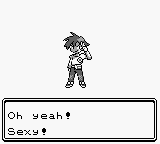

Welcome to My Blog, snth.io
I have a long tradition of poor electronic introductions.
The first time this happened was in the covered patio of Ponderosa Steakhouse where I received Pokemon Red. In a fit of creativity, I named my character Ben. My starter and rival fared worse; they were named "???" and "UNKNOWN". I took the naming prompts a little to literally. [1]
Before cell phones there were landlines, and the first time I ever called a girl was comical. Her family subscribed to a voice-to-text telephony service provided by the great state of Ohio. I talked to a grown man and he typed what I said to her. And he read her reply and spoke it back to me...in the tone of the day. There were also semantic control words to remember, such as "wait, hold on. No wait, please delete wait, hold on" and "OH GOODNESS DON'T TYPE THAT!" It was the awkwardest and most terrifying experience of my life.
Playing Laser Quest as a kid, I always entered a super lame-vest name. This is the reason why I never won or ranked in the top three.
When I write "Hello World" programs, I always choose depressing or ambivalent punctuation over the standard exclamation mark. Sometimes I substitute a Marvin the robot quote.
But now it is time for a good electronic introduction! Hi, I'm Ben and welcome to my blog. This is where I will share with you the thoughts on my mind and the goals I am working towards. Here's what you need to know:
- I'm an engineering student at the University of Cincinnati. I think it should be called engineering, not electrical engineering.
- I'm cutting-edge, because I texted via phone before people texted via phone (see above).
- I am on book 5 in A Song of Fire and Ice. If I ever write a feudal fantasy series, it will be titled Sandarac.
- One day, I hope to free the world from the limitations of current condiment dispensing technology.
- Dayton should really be generating hydroelectric power from its conservancy dams. What a waste.
I hope you enjoy my blog and learn something new, or enjoy it and teach me when I'm wrong, or enjoy it so much you start your own!
In fact, there are several advantages to having your own webpage vs. having a Facebook account. For me, I like being in control of the site design and have an adversion to using things I didn't build. But some other (better) reasons might be:
- Privacy
- If you are super popular, you could profit off advertising instead of Facebook
- So that we can be friends not just followers.
[1] Unfortunately, neither Pokemon nor life have a naming guru for people.